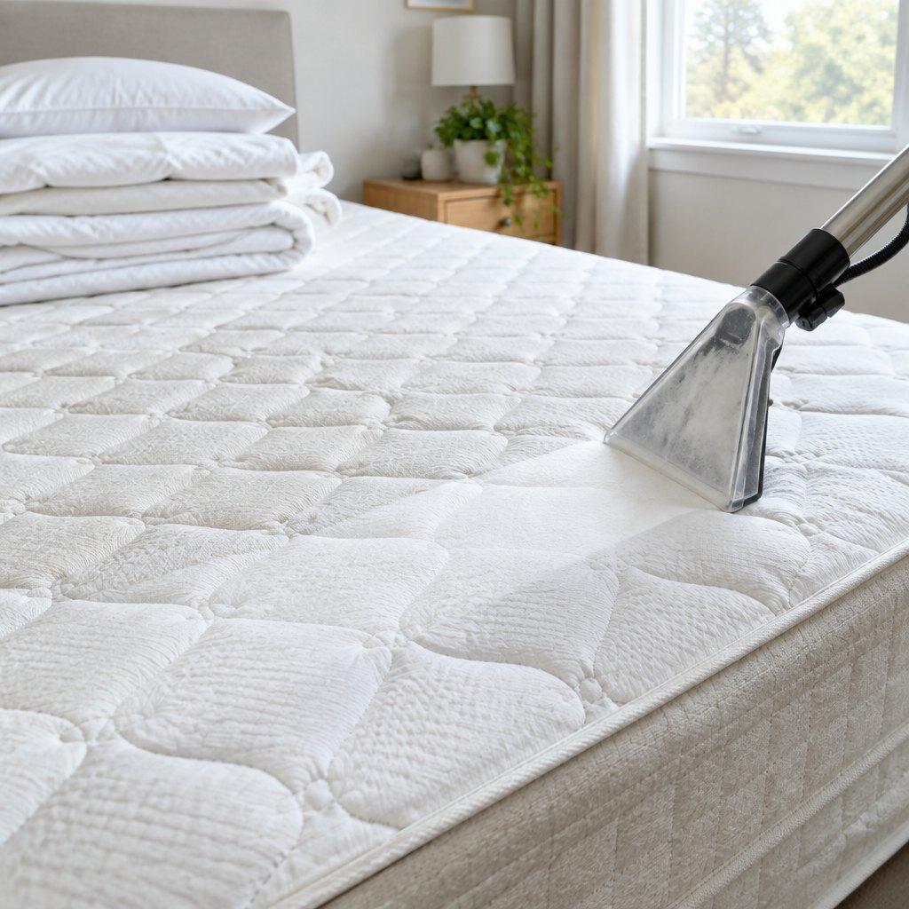

Матрас и изголовье кровати
Чистим с одной или двух сторон, убираем пылевых клещей, следы пота и запахи. Спать можно после полного высыхания.
Одна сторона или две
Матрас без съёмного чехла не постирать в машине. Экстрактор промывает ткань на месте и вытягивает влагу почти досуха.
Верхняя поверхность: там основной контакт с телом, пот и пыль. Подходит для регулярного ухода раз в 6–12 месяцев.
Матрас переворачиваем и промываем вторую сторону. Логично, если матрас не переворачивали давно.
Мягкая панель кровати: ткань, пуговицы, стёжка. Работаем аккуратно, чтобы не переувлажнить наполнитель.
Что живёт в матрасе
В матрасе за год накапливается до нескольких сотен граммов пыли, чешуек кожи и пота. Это среда для пылевых клещей — частой причины утренней заложенности носа и аллергии.
- Промывка ткани и верхнего слоя наполнителя
- Удаление пятен пота и биологических следов
- Нейтрализация запахов, а не маскировка
- Высыхание 4–8 часов, без фена и утюга
После работы проветриваем комнату и не застилаем матрас до полного высыхания.
Записаться на химчистку матраса
Скажите размер и сторону матраса — назовём время и стоимость. Выезд по Могилёву и пригороду.